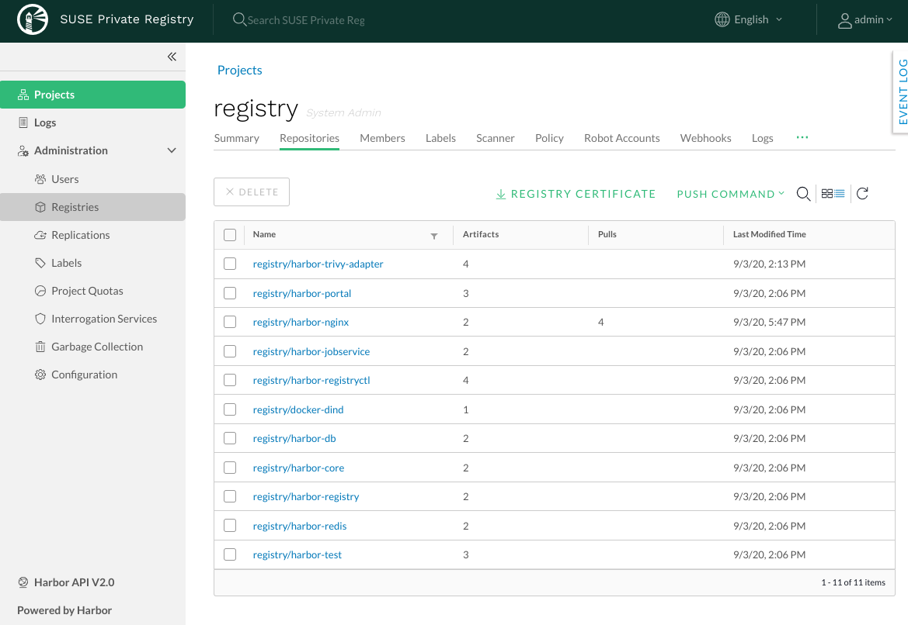

This is a draft document that was built and uploaded automatically. It may document beta software and be incomplete or even incorrect. Use this document at your own risk.
SUSE Private Registry User Interface can be accessed from a supported web browser at the location provided as <core_fqdn> during the installation.
Find out about the initial admin user password in [install-passwords].
|  |
After the first login, you can change the administrator’s password through the web UI. Select the admin tab and select Change Password.
Once a user (besides the admin) is registered, or logs in when using LDAP/AD or UAA, SUSE Private Registry is locked in the current authentication mode meaning that it is not possible switch to a different authentication mode. In that way, an authentication mode should be configured as soon as SUSE Private Registry is deployed.
Harbor supports different modes for authenticating users and managing user accounts. The following authentication modes are supported by SUSE Private Registry:
Database (default): User accounts are created/managed directly in SUSE Private Registry. The user accounts are stored on the SUSE Private Registry database.
LDAP/Active Directory: SUSE Private Registry is configured to use an external external LDAP/Active Directory server for user authentication. The user accounts are created and managed by the LDAP/AD provider.
UAA: SUSE Private Registry is configured to authenticate using an external UAA provider. The user accounts are created and managed by the UAA provider.
In database authentication mode, user accounts are stored in the local database. By default, only the SUSE Private Registry system administrator can create new user accounts. However, It is also possible to configure SUSE Private Registry to allow self-registration.
Configuring SUSE Private Registry with Database authentication mode:
Log in to the SUSE Private Registry interface with an account that has system administrator privileges.
Under Administration, go to Configuration and select the Authentication tab.
Leave Auth Mode set to the default Database option.
(Optionally) Select the Allow Self-Registration check box for allowing users to register themselves in SUSE Private Registry. Self-registration is disabled by default. If enabled unregistered users can sign up for a SUSE Private Registry account by clicking Sign up for an account on the SUSE Private Registry log in page.
Note that self-registration, creating users, deleting users, changing passwords, and resetting passwords is not supported in LDAP/AD authentication mode as users are managed by LDAP/AD.
When using LDAP/AD authentication, users whose credentials are stored in an external LDAP or AD server can log in to SUSE Private Registry directly. In this case, it is not necessary to create user accounts in SUSE Private Registry.
To be able to manage user authentication by using LDAP groups, it is required to enable the memberof feature on the LDAP/AD server.
With the memberof feature, the LDAP/AD user entity’s memberof attribute is updated when the group entity’s member attribute is updated, for example by adding or removing an LDAP/AD user from the LDAP/AD group.
The following steps describe how to enable LDAP/AD authentication mode:
Log in to the SUSE Private Registry interface with an account that has system administrator privileges.
Under Administration, go to Configuration and select the Authentication tab.
Use the Auth Mode drop-down menu to select LDAP.
Enter the address of the LDAP server, for example ldaps://10.84.5.171.
Enter information about the LDAP server as follows:
LDAP Search DN and LDAP Search Password: When a user logs in to SUSE Private Registry with their LDAP username and password, it uses these values to bind to the LDAP/AD server.
For example, cn=admin,dc=example.com.
LDAP Base DN: SUSE Private Registry looks up the user under the LDAP Base DN entry, including the subtree. For example, dc=example.com.
LDAP Filter: The filter to search for LDAP/AD users. For example, objectclass=user.
LDAP UID: An attribute, for example uid, or cn, that is used to match a user with the username. If a match is found, the user’s password is verified by a bind request to the LDAP/AD server.
LDAP Scope: The scope to search for LDAP/AD users. Select from Subtree, Base, and OneLevel.
To be able to manage user authentication with LDAP groups, configure the group settings:
LDAP Group Base DN: The base DN from which to lookup a group in LDAP/AD. For example, ou=groups,dc=example,dc=com.
LDAP Group Filter: The filter to search for LDAP/AD groups. For example, objectclass=groupOfNames.
LDAP Group GID: The attribute used to name an LDAP/AD group. For example, cn.
LDAP Group Admin DN: All LDAP/AD users in this group DN have Harbor system administrator privileges.
LDAP Group Membership: The user attribute usd to identify a user as a member of a group. By default this is memberof.
LDAP Scope: The scope to search for LDAP/AD groups. Select from Subtree, Base, and OneLevel.
Uncheck LDAP Verify Cert if the LDAP/AD server uses a self-signed or untrusted certificate.
Click Test LDAP Server to make sure that your configuration is correct.
Click Save to complete the configuration.
By configuring UAA authentication, users whose credentials are stored in an external UAA server can log in to SUSE Private Registry directly. In this case, it is not necessary to create user accounts in SUSE Private Registry. Note that just like LDAP authentication mode, self-registration, creating users, deleting users, changing passwords, and resetting passwords are not supported in UAA authentication mode as users are managed by UAA.
The following steps describe how to configure UAA authentication mode:
Register a client account on UAA. For example, using the UAA CLI and assuming the UAA server is available at http://10.83.7.181:8080:
Configure UAA CLI to target the UAA server and login as admin:
$ uaac target http://10.83.7.181:8080/uaa
$ uaac token client get admin -s <admin_secret> # replace <admin_secret> with the secret of the admin user
Register a client account for SUSE Private Registry:
$ uaac client add suse_private_registry -s suseprivateregistrysupersecret --scope uaa.user --authorized_grant_types client_credentials,password --authorities oauth.login
Log in to the SUSE Private Registry interface with an account that has system administrator privileges.
Under Administration, go to Configuration and select the Authentication tab.
Use the Auth Mode drop-down menu to select UAA.
Enter the address of the UAA server token endpoint, for example http://10.83.7.181:8080/uaa/oauth/token
Enter information about the UAA client account as follows:
UAA Client ID: The client account ID. For example suse_private_registry as created on step 1.
UAA Client Secret: The client account secret. For example suseprivateregistrysupersecret as created on step 1.
Uncheck UAA Verify Cert if the UAA server uses a self-signed or untrusted certificate.
Click Save to complete the configuration.
Changing the deployment configuration of a running SUSE Private Registry instance involves running helm upgrade in some form or other. The harbor-values.yaml file used during installation to provide the initial SUSE Private Registry configuration should be treated as the source of truth during all subsequent deployment configuration changes and upgrade operations.
For all SUSE Private Registry configuration change operations documented in this section, it is therefore highly recommended that the harbor-values.yaml be updated accordingly, and that the file be supplied to the helm upgrade command, instead of using additional --set command line arguments that are not be persisted.
Disregarding this recommendation may lead to situation in which the configuration of the running SUSE Private Registry installation is no longer in sync with the configuration described in the harbor-values.yaml file, which will cause unexpected configuration changes during upgrade operations.
Some SUSE Private Registry deployment configuration changes require restarting one or several of the registry components. To reduce service downtime while configuration changes are being applied, it is recommended to run SUSE Private Registry in high-availability mode (see the section called “High Availability” for more information).
Examples of supported post-installation deployment configuration changes, some of which are further documented in the sub-sections that follow:
Enabling or disabling internal TLS
Adding custom CA certificate bundles into the trust store used by SUSE Private Registry components
Rotating TLS certificates
Increasing the size of Kubernetes persistent volumes used by SUSE Private Registry components
Changing passwords, tokens and access keys
The password for the database admin
The password for the redis default account
The github token used by trivy to regularly update the vulnerability database
Changing the update strategy used for rolling updates
Changing the scale (replica count) for SUSE Private Registry services
Changing the Kubernetes service accounts associated with SUSE Private Registry pods
Enable or disable the notary component
Enable or disable trivy component
The following post-installation deployment configuration changes are not supported and require a full SUSE Private Registry re-installation:
Changing the storage type for the OCI artifact storage
Changing the storage class for Kubernetes persistent volumes
Decreasing the size of Kubernetes persistent volumes used by SUSE Private Registry components
Replacing the redis service
Replacing the database service
Helm configuration changes can usually be applied by updating the SUSE Private Registry harbor-values.yaml configuration file used during installation with the new configuration values and then running helm upgrade to apply the changes. Cases that required additional steps are explicitly documented in the sub-sections that follow.
The full list of deployment configuration options and default values that can overridden in the harbor-values.yaml file is included in the helm chart itself and can be viewed in YAML format by running the following command:
helm show values harbor
The SUSE Private Registry Deployment section also contains extended information on the most relevant helm configuration options. Those configuration options can be customized not only during installation but also updated post-installation, with the exceptions documented earlier in this section as not supported.
For example, to enable internal TLS, notary and trivy in one go (assuming they are all currently disabled), update the harbor-values.yaml configuration file and run helm upgrade as follows:
harbor-values.yaml.
internalTLS:
enabled: true
trivy:
enabled: true
replicas: 3
gitHubToken: "<github-auth-token>"
notary:
enabled: true
server:
replicas: 3
signer:
replicas: 3
helm -n registry upgrade suse-registry ./harbor -f harbor-values.yaml
Changing the database password is an administrative operation that has impact on service availability.
The password for the SUSE Private Registry internal or external database service can be changed in three steps:
First, shutdown all SUSE Private Registry services that use the database, to eliminate the risk of incomplete or failed transactions:
kubectl -n registry scale deployment -l component=core --replicas=0 kubectl -n registry scale deployment -l component=notary-server --replicas=0 kubectl -n registry scale deployment -l component=notary-signer --replicas=0
Change the password for the database server
For an external database, use the means available from the public cloud provider to set a new admin password.
For the internal database, the easiest way to do this is by accessing the database pod via kubectl exec and running a psql command to change the password, e.g.:
kubectl -n registry exec -ti harbor-harbor-database-0 -- psql psql (12.4) Type "help" for help. postgres=# \password Enter new password: <new-password-value> Enter it again: <new-password-value> postgres=# \q
Update the SUSE Private Registry harbor-values.yaml configuration file with the new password value and run helm upgrade to apply the change and start the services that were stopped at the first step:
harbor-values.yaml.
database:
internal:
...
# use this field for the internal database
password: "<new password value>"
external:
...
# use this field for the external database
password: "<new password value>"
helm -n registry upgrade suse-registry ./harbor -f harbor-values.yaml
Changing the redis password is an administrative operation that has impact on service availability.
The password for the SUSE Private Registry redis service can be changed in two steps:
First, change the password for the redis service itself
For an internal redis service, nothing needs to be done at this step.
If you’re running an external public cloud redis service, change the external redis password using the means available from the public cloud provider.
For a redis service deployed using the SUSE redis operator, the password can be changed as follows:
Update the secret created during installation with the new password:
helm -n registry delete secret redis-auth kubectl -n registry create secret generic redis-auth --from-literal=password="<new-password-value>"
Delete the running redis statefulset to force a configuration update:
helm -n registry delete statefulset -l app.kubernetes.io/component=redis
Update the SUSE Private Registry harbor-values.yaml configuration file with the new password value and run helm upgrade to apply the change:
harbor-values.yaml.
redis:
internal:
...
# use this field for the internal redis
password: "<new password value>"
external:
...
# use this field for the external redis
password: "<new password value>"
helm -n registry upgrade suse-registry ./harbor -f harbor-values.yaml
Certificate rotation is an administrative operation that impacts service availability. The certificates auto-generated by helm have a validity of 365 days, sufficient to not require rotating them too frequently. It is advised that all auto-generated certificates be rotated with every upgrade operation consisting in a minor or major version number change, to avoid loss of operation, but it is not required to do so more frequently.
The SUSE Private Registry helm chart provides the option to auto-generate certificates, if custom certificates aren’t explicitly provided. This applies to the following certificates and their use:
TLS certificates for the publicly exposed APIs: the Harbor UI/API and the notary API
A single certificate is generated for both endpoints, if tls.certSource is set to auto in the helm chart configuration.
TLS certificates for the internal communication
A certificate is generated for every SUSE Private Registry component that exposes an API consumed internally by other components (core, jobservice, registry, portal and trivy), if internalTLS.enabled is set to true and internalTLS.certSource is set to auto in the helm chart configuration.
A TLS certificate is used to secure the notary-signer internal API
This is handled independently of the global internalTLS.enable flag controlling internal TLS for other SUSE Private Registry components, because, for technical reasons, internal TLS cannot be disabled for the notary-signer component.
A certificate is automatically generated unless notary.secretName is set to point to a predefined secret providing a custom TLS certificate for this component.
A TLS certificate and private key pair are used by the SUSE Private Registry core component to generate encryption/decryption tokens for use by robot accounts
A certificate is automatically generated unless core.secretName is set to point to a predefined secret providing a custom TLS certificate and private key pair for this purpose.
By default, auto-generated TLS certificates are created during the initial SUSE Private Registry installation and kept unchanged during subsequent helm runs.
To re-generate these TLS certificates, the relevant rotateCert configuration flags need to be explicitly set during the helm runs, as detailed in the remainder of this section.
Rotating the certificates autogenerated for the Harbor UI/API and notary API will invalidate the CA certificates already configured on the remote hosts where these SUSE Private Registry services are accessed. See the the section called “Transport Layer Security (TLS) Setup” section for details on how to reconfigure these hosts.
To rotate the TLS certificates auto-generated for the publicly exposed APIs, run:
helm -n registry upgrade suse-registry ./harbor -f harbor-values.yaml --set expose.tls.auto.rotateCert=true
This operation can be performed with zero downtime, the SUSE Private Registry services themselves are not impacted by it.
To rotate the TLS certificates auto-generated for the internal communication (including notary-server), run:
helm -n registry upgrade suse-registry ./harbor -f harbor-values.yaml --set internalTLS.rotateCert=true --set notary.rotateCert=true
This operation requires all SUSE Private Registry components to be updated
Rotating the TLS certificate and private key pair autogenerated for encryption/decryption of tokens for robot accounts will invalidate the existing tokens.
To re-generate the TLS certificate and private key pair used for encryption/decryption of tokens for robot accounts, run:
helm -n registry upgrade suse-registry ./harbor -f harbor-values.yaml --set core.rotateCert=true
A Kubernetes StorageClass with ReadWriteMany access mode is required to enable high-availability for the SUSE Private Registry registry component, if a Kubernetes persistent volume is used as the storage back-end for OCI artifacts.
If a StorageClass with ReadWriteMany access is not configured for these components, setting the replica count to a value higher than 1 for them will result in failure.
To change the scale parameters for the internal components of a running SUSE Private Registry instance, update the harbor-values.yaml configuration file with new replica values, as desired, and then apply the change by running helm upgrade with the same parameters used during installation:
harbor-values.yaml.
portal:
replicas: 3
core:
replicas: 3
# Only enabled when using a LoadBalancer instead of Ingress to expose services
nginx:
replicas: 3
jobservice:
replicas: 3
registry:
replicas: 3
trivy:
replicas: 3
notary:
server:
replicas: 3
signer:
replicas: 3
helm -n registry upgrade suse-registry ./harbor -f harbor-values.yaml
Alternatively, kubectl may be used directly to scale SUSE Private Registry components individually, but special care should be taken to keep the harbor-values.yaml file updated to reflect the running configuration, otherwise subsequent configuration changes or upgrade operations that require running helm upgrade will revert the number of replicas back to the known configuration. For example, to scale the portal component to a new value of 3 pods, the following command may be used:
kubectl -n registry scale deployment -l component=portal --replicas=3
It is only possible to resize volumes containing a file system if the file system is XFS, Ext3, or Ext4.
When a volume contains a file system, the file system is only resized when a new Pod is using the PersistentVolumeClaim in ReadWrite mode.
File system expansion is either done when a Pod is starting up or when a Pod is running and the underlying file system supports online expansion.
It is extremely advised to perform a backup of the existing volumes that will be resized before taking any action as there is a risk of permanent data loss.
Only specific storage providers offer support for expanding PersistentVolumeClaims (PVCs).
Before taking any action, it is recommended to check the documentation of the storage provider available for your Kubernetes cluster and make sure that it supports expanding PVCs.
To be able to expand a PVC the storage class’s allowVolumeExpansion field needs to be set to true. For example:
kind: StorageClass
apiVersion: storage.k8s.io/v1
metadata:
name: persistent
annotations:
storageclass.kubernetes.io/is-default-class: 'true'
provisioner: kubernetes.io/cinder
reclaimPolicy: Delete
volumeBindingMode: Immediate
allowVolumeExpansion: trueIf the storage backend does not support online expansion, additional steps that impact the service availability are required to conclude the resizing.
To resize the PVC for the registry and the jobservice components of SUSE Private Registry, update the harbor-values.yaml configuration file with the new storage sizes for the registry and jobservice components, then apply the change by running helm upgrade with the same parameters used during installation, e.g.:
harbor-values.yaml.
persistence:
persistentVolumeClaim:
registry:
...
size: 100Gi
jobservice:
...
size: 5Gi
helm -n registry upgrade suse-registry ./harbor -f harbor-values.yaml
The above command will set the PVC size of the jobservice component to 5 gigabytes and 100 gigabytes for the registry PVC.
If the storage backend supports online expansion the PVCs will be automatically resized and no additional action is needed.
However, If the storage backend does not support online expansion additional steps are required to conclude the volume resize which includes deleting the pods that are using the volume being resized, waiting for the volume to be resized and finally starting new pods. For example, to finalize the resize of the jobservice PVC when volume online expansion is not supported:
Check the status of the PVC to make sure it is waiting for the volume to be detached to perform the resize:
kubectl -n registry describe pvc -l component=jobservice | sed -n -e '/Conditions/,$p' Conditions: Type Status LastProbeTime LastTransitionTime Reason Message ---- ------ ----------------- ------------------ ------ ------- Resizing True Mon, 01 Jan 0001 00:00:00 +0000 Fri, 23 Oct 2020 17:56:33 +0200 Events: Type Reason Age From Message ---- ------ ---- ---- ------- Normal ProvisioningSucceeded 2m34s persistentvolume-controller Successfully provisioned volume pvc-297dfa22-0711-4b43-bea0-cdb3684bc2a0 using kubernetes.io/<plugin> Warning VolumeResizeFailed 31s (x13 over 73s) volume_expand error expanding volume "suse-registry/suse-registry-harbor-jobservice" of plugin "kubernetes.io/<plugin>": volume in in-use status can not be expanded, it must be available and not attached to a node
Set the number of replicas of the jobservice deployment to 0 (this will delete the jobservice pods and the service will be unavailable):
kubectl -n registry scale deployment -l component=jobservice --replicas=0 deployment.apps/suse-registry-harbor-jobservice scaled
Check the status of the PVC, wait until the volume resize is complete and its just waiting for the pod to start to finish resizing the file system:
kubectl -n registry describe pvc -l component=jobservice | sed -n '/Conditions/,/Events/p' Conditions: Type Status LastProbeTime LastTransitionTime Reason Message ---- ------ ----------------- ------------------ ------ ------- FileSystemResizePending True Mon, 01 Jan 0001 00:00:00 +0000 Fri, 23 Oct 2020 18:02:03 +0200 Waiting for user to (re-)start a pod to finish file system resize of volume on node.
Set the number of replicas back to the previous value (1 in this case) to conclude the resize:
kubectl -n registry scale deployment -l component=jobservice --replicas=1 deployment.apps/suse-registry-harbor-jobservice scaled
Confirm that the file system resize has finished successfully:
kubectl -n registry describe pvc -l component=jobservice | sed -n -e '/Events/,$p' Events: ... Normal FileSystemResizeSuccessful 52s kubelet, caasp-worker-eco-caasp4-upd-eco-2 MountVolume.NodeExpandVolume succeeded for volume "pvc-297dfa22-0711-4b43-bea0-cdb3684bc2a0"
The same steps can be followed to conclude expanding the registry PVC by replacing component=jobservice with component=registry on each command.
Kubernetes does not officially support volume expansion through StatefulSets, trying to do so by using helm with new values for PVC size will throw the following error:
Error: UPGRADE FAILED: cannot patch "suse-registry-release-12-harbor-trivy" with kind StatefulSet: StatefulSet.apps "suse-registry-release-12-harbor-trivy" is invalid: spec: Forbidden: updates to statefulset spec for fields other than 'replicas', 'template', and 'updateStrategy' are forbidden
This means that the volumeClaimTemplates field of a StatefulSet is immutable and cannot be updated with a new value for size.
In that way, extra actions are required to perform the resize of PVCs managed by StatefulSets.
The following steps describe how to expand volumes managed by SatefulSets using the trivy component as an example.
The same steps can be performed also for the database and redis components of SUSE Private Registry just by replacing trivy for database or redis on each command:
Delete the StatefulSet while keeping the pods running together with any other resource that was managed by the StatefulSet such as the PVC.
This can be done by setting --cascade=false to the kubectl delete command, for example:
kubectl -n registry delete sts --cascade=false -l component=trivy statefulset.apps "suse-registry-harbor-trivy" deleted
Edit the PVC spec with the new size (10 gigabytes in this example), this can be done in many different ways. For example using kubectl patch:
NEW_SIZE="10Gi"
NAMESPACE="registry"
# depending on the number of replicas, trivy can have more than one PVC.
for pvc in $(kubectl -n $NAMESPACE get pvc -l component=trivy -o name); do
kubectl -n $NAMESPACE patch $pvc -p "{\"spec\":{\"resources\":{\"requests\":{\"storage\":\"$NEW_SIZE\"}}}}"
done
persistentvolumeclaim/data-suse-registry-harbor-trivy-0 patched
persistentvolumeclaim/data-suse-registry-harbor-trivy-1 patchedUpdate the harbor-values.yaml configuration file with the new storage size for the intended component, then apply the change by running helm upgrade with the same parameters used during installation, to re-define the StatefulSets with the new size to keep consistency. For trivy, for example:
harbor-values.yaml.
persistence:
persistentVolumeClaim:
trivy:
...
size: 10Gi
helm -n registry upgrade suse-registry ./harbor -f harbor-values.yaml
Just like for deployments, if the storage backend supports online expansion the PVCs will be automatically resized and no additional action is needed. However, If the storage backend does not support online expansion additional steps are required to conclude the volume resize which includes deleting the pods that are using the volume being resized, waiting for the volume to be resized and finally starting new pods. For example, to finalize the resize of the trivy PVC when volume online expansion is not supported:
Check the status of the PVCs to make sure it is waiting for the volume to be detached to perform the resize:
kubectl -n registry describe pvc -l component=trivy | sed -n -e '/Conditions/,$p' Conditions: Type Status LastProbeTime LastTransitionTime Reason Message ---- ------ ----------------- ------------------ ------ ------- Resizing True Mon, 01 Jan 0001 00:00:00 +0000 Mon, 26 Oct 2020 13:29:58 +0100 Events: Type Reason Age From Message ---- ------ ---- ---- ------- Normal ProvisioningSucceeded 8m8s persistentvolume-controller Successfully provisioned volume pvc-8fe4a4b6-83c8-47d0-a266-f8cdbd4e3918 using kubernetes.io/<plugin> Warning VolumeResizeFailed 28s (x17 over 5m57s) volume_expand error expanding volume "suse-registry/data-suse-registry-harbor-trivy-0" of plugin "kubernetes.io/<plugin>": volume in in-use status can not be expanded, it must be available and not attached to a node
Set the number of replicas of the trivy statefulset to 0 (this will delete the trivy pods and the service will be unavailable):
kubectl -n registry scale sts -l component=trivy --replicas=0 statefulset.apps/suse-registry-harbor-trivy scaled
Check the status of the PVC, wait until the volume resize is complete and its just waiting for the pod to start to finish resizing the file system:
kubectl -n registry describe pvc -l component=trivy | sed -n '/Conditions/,/Events/p' Conditions: Type Status LastProbeTime LastTransitionTime Reason Message ---- ------ ----------------- ------------------ ------ ------- FileSystemResizePending True Mon, 01 Jan 0001 00:00:00 +0000 Mon, 26 Oct 2020 13:40:55 +0100 Waiting for user to (re-)start a pod to finish file system resize of volume on node.
Set the number of replicas back to the previous value (2 in this case) to conclude the resize:
kubectl -n registry scale sts -l component=trivy --replicas=2 deployment.apps/suse-registry-harbor-jobservice scaled
Confirm that the file system resize has finished successfully:
kubectl -n registry describe pvc -l component=trivy | sed -n -e '/Events/,$p' Events: ... Normal FileSystemResizeSuccessful 64s kubelet, caasp-worker-eco-caasp4-upd-eco-2 MountVolume.NodeExpandVolume succeeded for volume "pvc-8fe4a4b6-83c8-47d0-a266-f8cdbd4e3918"
SUSE Private Registry maintenance updates containing new helm chart and container image versions are regularly published to address security vulnerabilities and to fix critical bugs. These updates do not introduce new features and therefore can be applied in a manner similar to regular helm configuration changes, with minimal disruption to service availability.
It is highly recommended to install SUSE Private Registry maintenance updates regularly and as frequently as possible, to keep your SUSE Private Registry instance up to date with the latest security patches and fixes for functionality impairing issues.
Installing SUSE Private Registry maintenance updates require restarting one or several of the registry components. To minimize service downtime while the update is being applied, it is recommended to run SUSE Private Registry in high-availability mode (see the section called “High Availability” for more information).
The harbor-values.yaml file used during installation to provide the initial SUSE Private Registry configuration, as well as during subsequent helm configuration changes is also required to install maintenance updates.
To check for SUSE Private Registry maintenance updates and subsequently install them:
Download the newest Helm chart version from the official SUSE repository:
export HELM_EXPERIMENTAL_OCI=1 # download a chart from public registry helm chart pull registry.suse.com/harbor/harbor:1.5 # export the chart to local directory helm chart export registry.suse.com/harbor/harbor:1.5
The output from the helm chart pull command will indicate the helm chart version that is available in the public registry. Make a note of it:
1.5: Pulling from registry.suse.com/harbor/harbor ref: registry.suse.com/harbor/harbor:1.5 digest: db4731ab843d9837eb83327b735a7c5c19826e225858333a3b9a57668d5d40b8 size: 178.1 KiB name: harbor version: 1.5.2 Status: Chart is up to date for registry.suse.com/harbor/harbor:1.5
Verify the version of the running SUSE Private Registry instance:
> helm -n registry list NAME NAMESPACE REVISION UPDATED STATUS CHART APP VERSION suse-registry registry 6 2020-11-17 15:20:46.037254 +0200 CEST deployed harbor-1.5.1 2.1.1
If the helm chart version displayed is the same as the one available from the public registry, your SUSE Private Registry instance is up to date and nothing else needs to be done. Otherwise, maintenance updates are available and can be installed.
Trigger the upgrade using the harbor-values.yaml configuration file:
helm -n registry upgrade suse-registry ./harbor -f harbor-values.yaml
Check the installation
The SUSE Private Registry update will take a while to complete, while new pods are being created to replace old pods. You can check the status and see if everything is running correctly, e.g.:
> kubectl -n registry get deployments NAME READY UP-TO-DATE AVAILABLE AGE suse-registry-harbor-core 2/2 2 2 32d suse-registry-harbor-jobservice 2/2 2 2 32d suse-registry-harbor-portal 2/2 2 2 32d suse-registry-harbor-registry 1/1 1 1 32d
> kubectl -n registry get statefulset NAME READY AGE suse-registry-harbor-database 1/1 32d suse-registry-harbor-redis 1/1 32d suse-registry-harbor-trivy 2/2 4d1h
> kubectl -n registry get pod NAME READY STATUS RESTARTS AGE suse-registry-harbor-core-85845f9777-5rkbb 1/1 Running 0 24h suse-registry-harbor-core-85845f9777-krwk2 1/1 Running 0 24h suse-registry-harbor-database-0 1/1 Running 0 24h suse-registry-harbor-jobservice-7f954f9466-66b2r 1/1 Running 0 24h suse-registry-harbor-jobservice-7f954f9466-6n96t 1/1 Running 0 24h suse-registry-harbor-portal-76b465644f-4zmxw 1/1 Running 0 24h suse-registry-harbor-portal-76b465644f-lndlm 1/1 Running 0 24h suse-registry-harbor-redis-0 1/1 Running 0 24h suse-registry-harbor-registry-65854df7bc-mrfnj 2/2 Running 0 24h suse-registry-harbor-trivy-0 1/1 Running 1 24h suse-registry-harbor-trivy-1 1/1 Running 0 24h
Backup and restore for SUSE Private Registry can be performed by Velero. Velero not only handles this, but also disaster recovery, and the migration of Kubernetes cluster resources and persistent volumes.
When SUSE Private Registry is deployed together with its internal services (database, Redis and filesystem storage for image and artifacts) Velero is able to fully cover the backup and restore. However, as Velero is only responsible for Kubernetes resources, when SUSE Private Registry is deployed using external service providers, such as managed PostgreSQL database or object storage (Amazon S3 or Azure Blob Storage), additional actions must be performed to ensure the backup of data that is external to the Kubernetes cluster.
In general, the backup and restore process for SUSE Private Registry can be split in two parts:
Backup and restore of Kubernetes resources (performed by Velero):
Namespace
Deployment
ReplicaSet
StatefulSet
Endpoint
Service
Ingress
ConfigMap
Secret
PersistentVolumeClaim
PersistentVolume
Pod
Other CRDs (e.g. Certificate when using cert-manager or RedisFailover when using redis-operator)
Backup and restore of external services:
Database
Redis
Object Storage
The following steps describe how to perform the backup and restore of Kubernetes resources using Velero.
Install Velero as described in the documentation
(optional) If you are using a volume provider that does not support volume snapshots or a volume-snapshot API, or does not have Velero-supported storage plugin, then Velero uses Restic as a generic solution to backing and restoring this sort of persistent volume. To perform a Restic backup of persistent volumes, Velero requires the addition of a specific annotation (backup.velero.io/backup-volumes=<VOLUME_NAME_1>,<VOLUME_NAME_2>,…) to the pods that have the volumes mounted. This can be achieved by adding the following entries to the SUSE Private Registry’s Helm chart (harbor-values.yaml), then performing helm upgrade to apply the annotations:
harbor-values.yaml.
registry:
podAnnotations:
backup.velero.io/backup-volumes: registry-data
trivy:
podAnnotations:
backup.velero.io/backup-volumes: data
database:
podAnnotations:
backup.velero.io/backup-volumes: database-data
redis:
podAnnotations:
backup.velero.io/backup-volumes: data
helm -n registry upgrade suse-registry ./harbor -f harbor-values.yaml
If using an external service, such as a managed PostgreSQL database, you do not need to add the database entry. The same applies for redis when using an external Redis, and for registry when using an external storage back-end for storing images and artifacts.
Back-up the cluster with the command velero backup create <backup-name> --include-namespaces <namespace-to-backup>. For example:
> velero backup create registry-backup --include-namespaces registry Backup request "registry-backup" submitted successfully. Run `velero backup describe registry-backup` or `velero backup logs registry-backup` for more details.
Velero supports backing up all Kubernetes cluster resources; however, in this case, the backup is performed for the registry namespace only. In some cases, such as when using cert-manager or redis-operator, you might need to include those namespaces in the backup.
To check the backup status and ensure its completion, run velero backup describe <backup-name>. For example:
> velero backup describe registry-backup Name: registry-backup Namespace: velero Labels: velero.io/storage-location=default Annotations: <none> Phase: Completed Namespaces: Included: registry Excluded: <none> Resources: Included: * Excluded: <none> Cluster-scoped: auto Label selector: <none> Storage Location: default Snapshot PVs: auto TTL: 720h0m0s Hooks: <none> Backup Format Version: 1 Started: 2020-12-17 12:00:12 +0100 CET Completed: 2020-12-17 12:01:36 +0100 CET Expiration: 2021-01-16 12:00:12 +0100 CET Persistent Volumes: <none included> Restic Backups (specify --details for more information): Completed: 4
For more advanced options, such as scheduling backups and configuring expiration times, check the Velero documentation.
If you are restoring onto a new Kubernetes cluster, install Velero by following the CaaSP Velero documentation. Make sure to use the same storage back-end used to perform the backup, so that Velero can access the existing backups. If restoring onto the same cluster, make sure to completely delete the existing SUSE Private Registry deployment, including its namespace.
To restore the cluster, run the command velero restore create <restore-name> --from-backup <backup-name>. For example:
> velero restore create registry-restore --from-backup registry-backup Restore request "registry-restore" submitted successfully. Run `velero restore describe registry-restore` or `velero restore logs registry-restore` for more details.
To check the restore status and ensure its completion, run velero restore describe <restore-name>. For example:
> velero restore describe registry-restore Name: registry-restore Namespace: velero Labels: <none> Annotations: <none> Phase: Completed Errors: Velero: <none> Namespaces: <none> Backup: registry-backup Namespaces: Included: * Excluded: <none> Resources: Included: * Excluded: nodes, events, events.events.k8s.io, backups.velero.io, restores.velero.io, resticrepositories.velero.io Cluster-scoped: auto Namespace mappings: <none> Label selector: <none> Restore PVs: auto Restic Restores (specify --details for more information): Completed: 4
For more advanced options, such restoring from a scheduled backup, see the Velero documentation.
For backup and restore of external services, see the official documentation of the adopted solution. For example:
Database:
Redis:
Object storage: